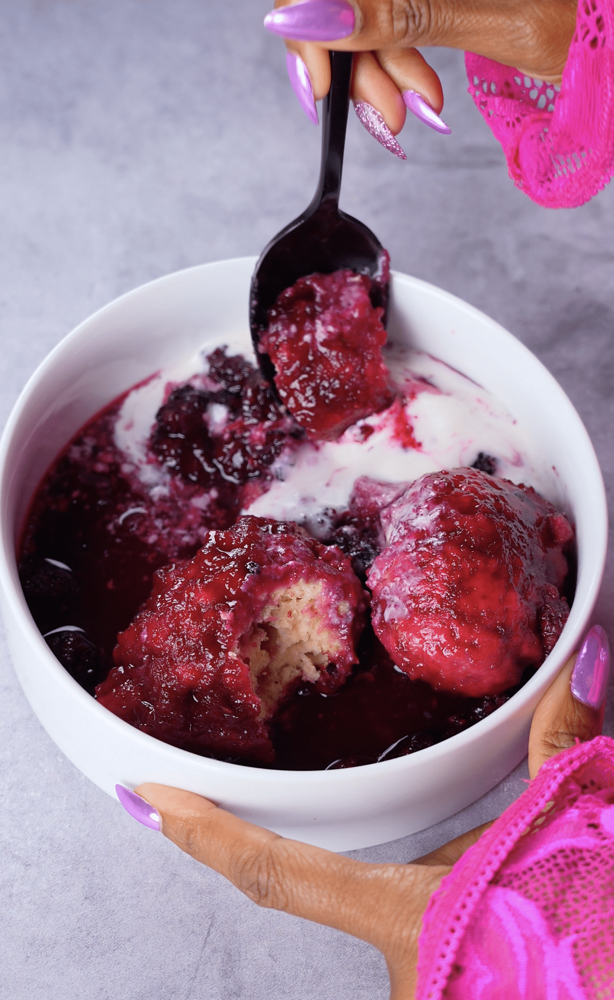

Presented by Sonja Norwood

In a large saucepan, Dutch oven, or deep pot combine: blackberries, sugar, water, lemon zest and lemon juice. Bring the mixture to a boil over medium-high heat, stirring occasionally.
Reduce heat to low and allow the berries to gently simmer while preparing the dumplings.
In a large bowl whisk together: flour, sugar, baking powder, salt and nutmeg. In a separate bowl whisk together: milk, egg and vanilla. Pour the wet ingredients into the dry ingredients and stir just until a soft, slightly sticky dough forms. If the dough feels too wet, add a little more flour one tablespoon at a time until it holds together.
Increase the heat under the blackberries to medium so the syrup is gently simmering.
Drop the dumpling dough into the berries using heaping tablespoonfuls, leaving space between each dumpling. Cover the pot with a lid and do not stir.
Let the dumplings cook for 15 minutes. Important: Do not lift the lid during this time—the steam is what cooks and puffs the dumplings. Remove the lid.
If desired, gently turn the dumplings so the tops get coated in the blackberry syrup. Let the mixture simmer uncovered for 5 minutes to slightly thicken the syrup. After simmering uncovered for about 5 minutes to thicken the syrup, you don’t need to separate anything. The dumplings should already be sitting in that rich syrup.
You can spoon everything directly into a bowl and then ladle extra syrup right over the top when serving. It’s meant to be saucy and cozy, almost like a one-pot dessert.